Guides, household maps, articles, and a few simple calculators. Built for the questions clients ask most, and the ones they should be asking.
Our most-used guide
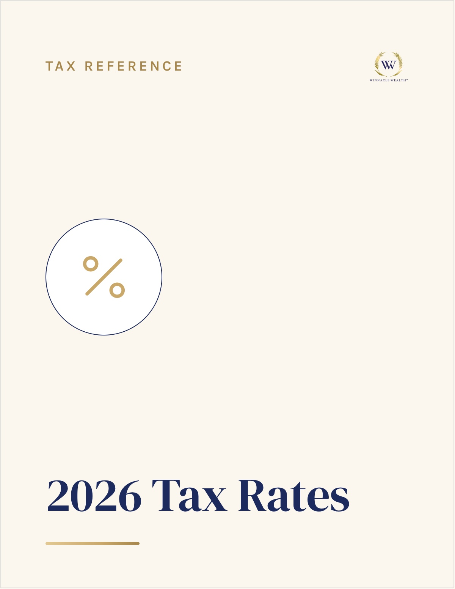
The one-page reference we pull up in nearly every client meeting. It lays out how different kinds of income and accounts are taxed, side by side, so you can see why the order you draw from them matters as much as how much you've saved.
Inside: taxable vs. tax-deferred vs. tax-free buckets · how each is taxed · why withdrawal order matters · where Roth conversions fit.
Download the Guide →Short, plain-English PDFs on the questions clients ask most.
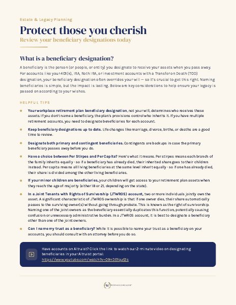
Who inherits what, and how to keep beneficiary designations from quietly overriding your plan.
Download →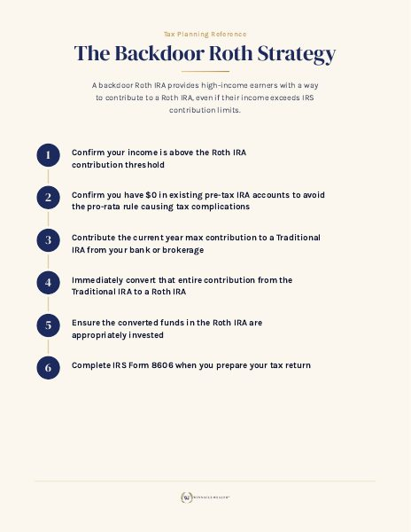
The step-by-step for high earners, plus the pro-rata trap that catches people.
Download →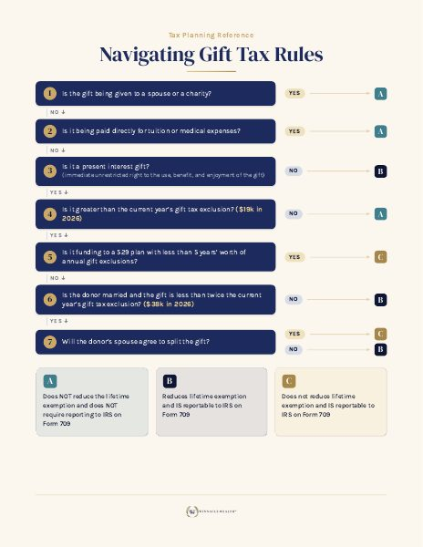
Annual exclusions, lifetime limits, and how gifting actually works.
Download →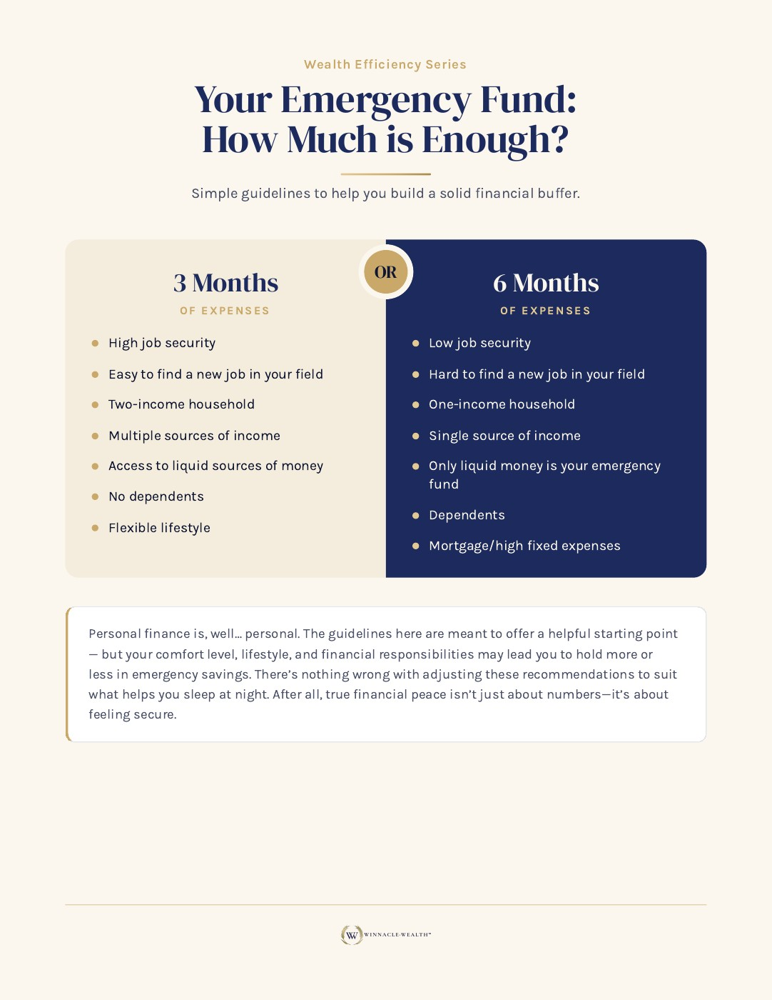
How much to keep in cash, where to keep it, and when to actually use it.
Download →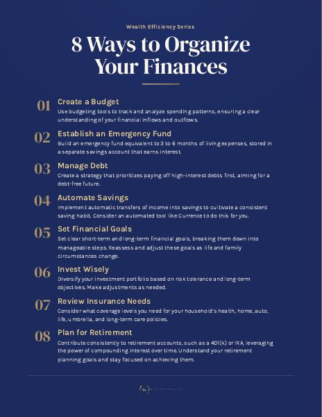
Practical habits to get your accounts, documents, and cash flow in order.
Download →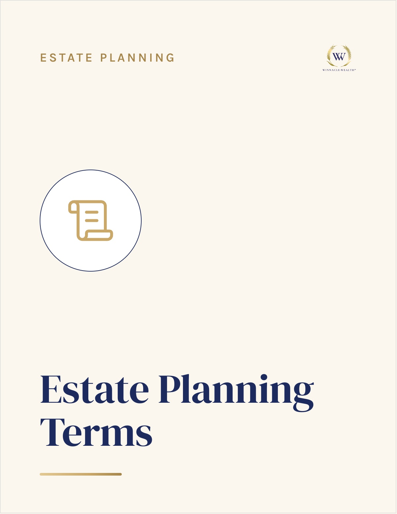
Wills, trusts, POAs, and the estate vocabulary every household should know.
Download →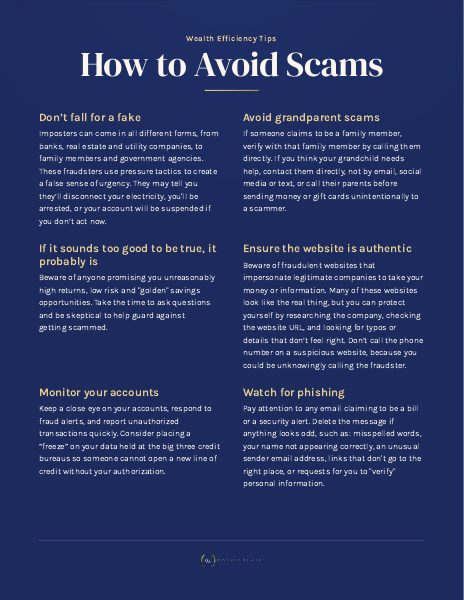
How to spot and shut down the financial scams that target retirees.
Download →Longer, complimentary guides for the bigger decisions — free to download.
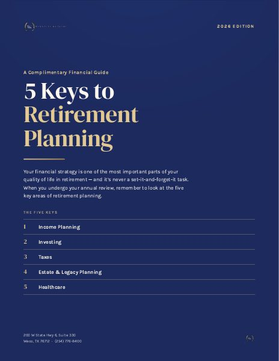
The five decisions that shape a retirement: income, taxes, healthcare, Social Security, and legacy.
Download →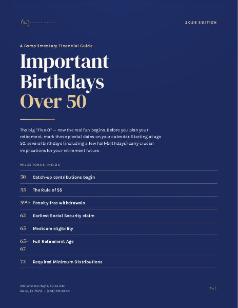
The ages that quietly reshape your plan — catch-up contributions, Medicare windows, RMDs, and Social Security timing.
Download →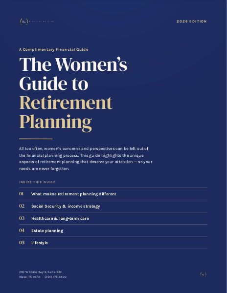
The aspects of retirement planning that matter most for women, so your needs are never left out. A companion to JustHer®.
Download →Short reads on the decisions clients are working through right now.
The mental and emotional shifts that come with leaving work, and how to prepare for them.
Read →Real tax-planning wins, and the avoidable mistakes we see most often.
Read →Test-driving retirement before you commit, and what it tends to reveal.
Read →Why the two aren't the same thing, and which one actually lasts.
Read →What the recent change means, and how to check whether it affects you.
Read →A quick checklist to catch the scams that target your accounts.
Read →New articles, upcoming classes, and the occasional walk-through of a decision a client just made. Unsubscribe anytime.
15 minutes. Decide together whether we're a fit.